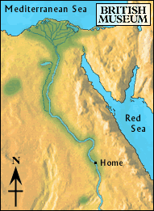

Nile

The boy climbed aboard the boat just as the sails were hoisted up. After days of sailing, they reached a port. The sails were lowered, and the boat was tied up on shore.
As the men unloaded supplies from the boat the boy explored the other boats. One boat was going to the ‘great lake' (the Faiyum) to pick up a load of wine and dates.
Should he go to the Faiyum, or go home?